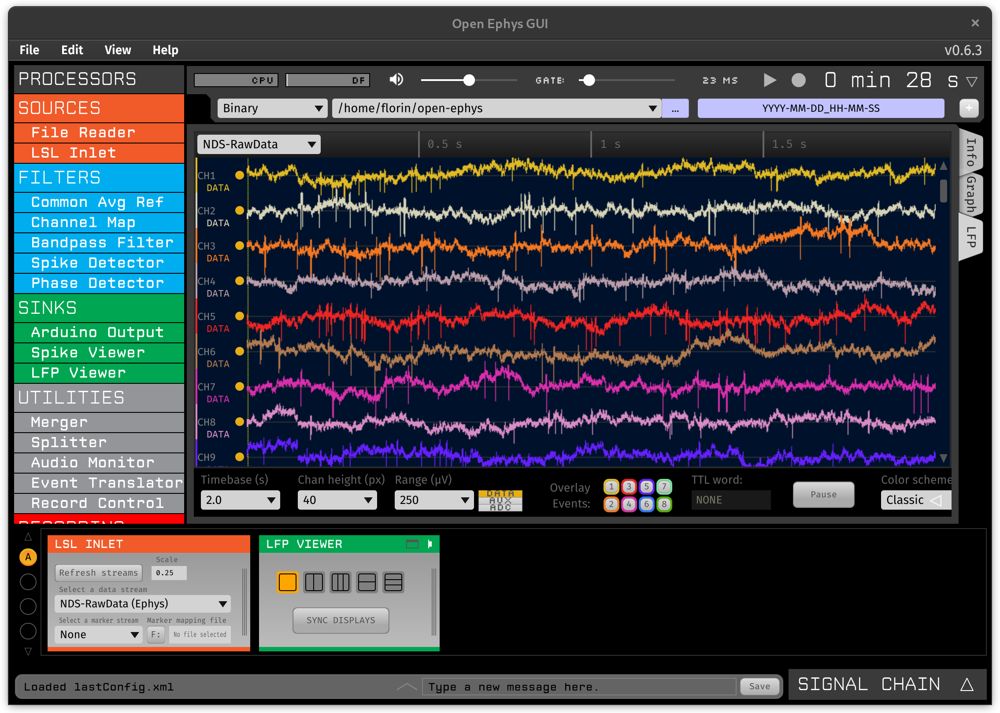

Visualizing Data
You can plot the electrophysiology data using the open-ephys GUI and the LSL plugin. When using this plugin make sure to select the NDS-RawData stream and set the scale to 0.25 (or your own configured resolution) to convert the data from counts to microvolts. The signal chain could be as simple as the one depicted below:
